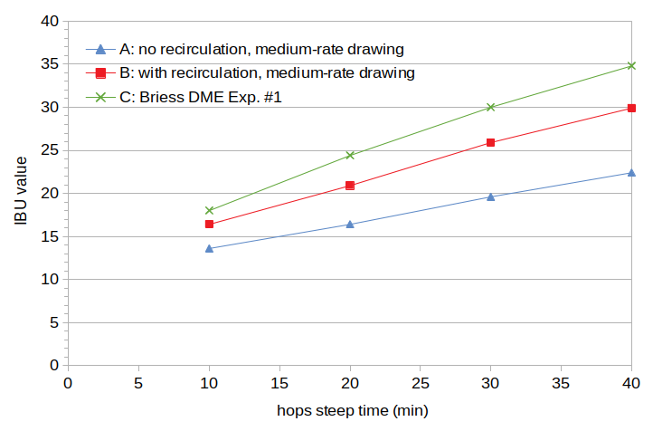
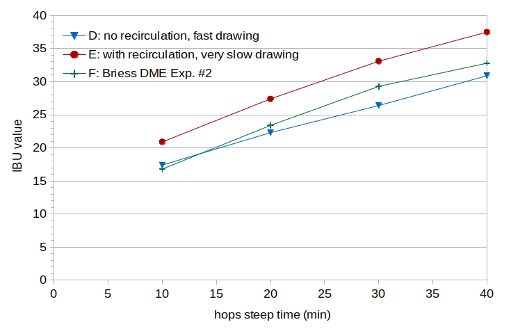
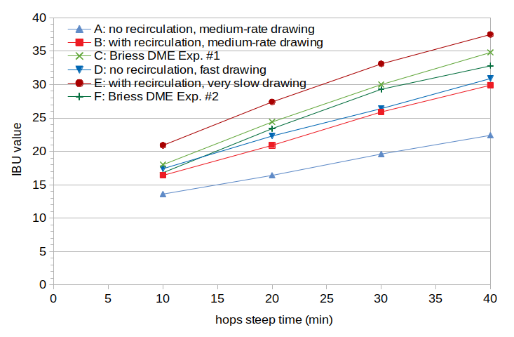

Abstract
Lautering is the process of separating wort from spent grains. Two of the three experiments described here look at wort produced using different lautering techniques and how the resulting wort characteristics impact IBUs. The third experiment looks at the impact of wort clarity after lautering. The results indicate that very turbid (cloudy) wort can yield about 30% fewer IBUs than average, and very clear wort (free from smaller particles) can yield about 30% more IBUs than average. A 10-minute rest period to allow hot and cold break to settle before transfer into the fermentation vessel can have an 8% impact on IBUs, suggesting that it's not the lautering technique itself but the final clarity of the wort going into the fermentation vessel that affects IBUs. The reason for the difference in IBUs may be that isomerized alpha acids (IAA) bind to small particles in the wort during fermentation and precipitate out of solution. A proposed model of the impact of wort clarity on IAA uses a linear scaling factor with a value of 1.30 for very clear wort, 1.0 for average wort, and 0.70 for very cloudy wort. While the results indicate that clear wort yields more IBUs than cloudy wort, the adage that "clear wort produces clear beer" was not confirmed.
1. Introduction
A number of factors are typically listed as having an impact on IBUs and/or isomerized alpha acids, including alpha-acid concentration, boil time, wort temperature, hopping rate, wort pH, form of the hops (e.g. cones or pellets), and wort gravity. Lewis and Young state that "iso-alpha-acids react with proteins of wort whence they are partially removed as trub or hot break" [Lewis & Young, p. 266], implying that a wort higher in protein might result in reduced isomerized alpha acid concentration and therefore lower IBUs. In the first experiment described in this blog post, I was looking for the effect that wort protein levels might have on IBUs. Because the teig layer on top of the grain bed that results from recirculation is high in proteins [Lewis & Young, p. 216, p. 247], I thought that it would be interesting to compare protein levels from lautering with and without recirculation, and to compare the IBUs from these different worts when using the same amount of hops. When this experiment (described in Section 3) did not show the expected results, but other preliminary data indicated the possible impact of wort clarity instead of proteins, I performed the second experiment with lautering techniques that produced different levels of wort clarity, and the third experiment with the same post-boil wort but different levels of clarity going into the fermentation vessel. When looked at as a single set of data, the first two experiments provide six examples of wort lautered in five different ways, producing wort of varying clarity. These experiments present the first data I'm aware of that look at the impact of lautering technique and wort clarity on IBUs.
2. Terminology
2.1 The IBU
The IBU is a measure of the concentration of a number of different bitter compounds in beer. (To be more precise, the IBU is a measure of the absorbance of light at 275 nm through acidified beer. A number of bitter compounds in beer absorb light at this frequency. The greater the concentration of these compounds, the more light is absorbed, and the higher the IBU.) In typical beers, the IBU value represents mostly the concentration of isomerized alpha acids (IAAs) [Peacock, pp. 164-165], which are produced during the boil from alpha acids (AA). The other bitter compounds, known as "auxiliary bittering compounds" (ABCs), or nonIAA, are polyphenols, oxidized alpha acids, and oxidized beta acids. These compounds can be considered to be present in the wort soon after the hops addition [e.g. Dierckens and Verzele, p. 454; Askew, p. 18]. The majority of ABC appear to be oxidized alpha acids, which are produced when hops are added to the boiling wort [Parkin, p. 11, Algazzali, p. 17; Dierckens and Verzele, p. 454; Oliver p. 471] as well as during storage [Lewis and Young, p. 265].
2.2 Lautering
Lautering is the process of separating wort from spent grains. There are several possible steps in lautering: mash-out, recirculation, sparging, and drawing (or run-off) of the liquid wort. All of these steps are optional except for the drawing of wort. If performing a mash-out, the temperature of the wort is raised to 170°F (77°C) to stop (or greatly reduce) enzymatic activity. If performing recirculation (also called vorlauf), some of the wort is drawn out and recirculated back onto the grain bed. The grain bed acts as a filter to remove larger particles from the wort [Oliver, p. 819]. There are two common types of sparging: fly sparging and batch sparging; it is also possible to omit this step entirely for "no sparge" wort collection. While the drawing of wort is not typically discussed much, in my experience the speed at which the wort is drawn, in combination with how well the grain bed filter has set, can have a large effect on wort clarity. There is an adage that "clear wort makes clear beer", and so some brewers aim for the clearest wort possible.
2.3 Brew-in-a-Bag (BIAB)
The Brew-in-a-Bag (BIAB) technique is one method of lautering. In its most basic form, the mash is performed while the grains are inside a mesh bag; when the mash is complete, the bag is removed (with the grains), leaving the wort behind. There are several variations on this technique, including with and without mash-out, and with and without sparging. The standard BIAB approach is essentially lautering with an optional mashout, no recirculation, no sparge, and fast drawing of the wort.
2.4 Teig and Wort Proteins
Recirculation and/or continuous sparging can form a layer of teig ("top dough") on the top of the grain bed [Palmer, p. 306]. This teig layer is high in proteins [Lewis & Young, p. 216, p. 247]. Because the teig layer is separate from the liquid wort, wort that is produced leaving a layer of teig on the grain bed should have a lower concentration of proteins than wort in which no teig layer is formed.
2.5 Wort Clarity
While there are instruments for measuring turbidity, I judged wort clarity/turbidity in these experiments on an entirely subjective basis. (Tubidity meters do exist but are not cheap.) If I were to re-do these experiments, I would more strongly consider investing in such a meter.
3. Experiment #1
3.1 Experiment #1: Experimental Overview
The intended difference between conditions in the first experiment was the level of protein in the wort, which was expected to differ according to the amount of teig on the grain bed, which in turn was controlled by lautering with and without recirculation.
This first experiment had three conditions. Condition A used wort produced with mash-out, without recirculation, and no sparge (in a manner similar to BIAB). Condition B used wort produced with mash-out, with recirculation, and no sparge. Condition C used wort produced from Briess Pilsen Light Dried Malt Extract (DME). The intended difference between Conditions A and B was a teig layer in Condition B that would decrease the concentration of proteins in the wort relative to Condition A. Condition C was used as a reference condition, as most of the experiments conducted for this blog have used wort produced using DME.
For lautering Conditions A and B, I used a 13 G (49 l) picnic-cooler lautering vessel with a 12" (30 cm) mash screen connected to a ball valve and tubing. To prevent very large particles from ending up in the wort of Condition A, I covered the mash screen with a fine mesh bag. In Condition B, I performed the recirculation for 10 minutes, gently recirculating the wort to the other end of the lautering vessel. In both Condition A and Condition B, I kept the ball valve approximately one-third open, allowing the wort to flow at a moderate rate.
In other respects, all three conditions were intended to be identical, having the same target specific gravity, volume, and hops. I did not expect the wort pH to differ significantly between conditions, and so I did not control for pH.
3.2 Experiment #1: Methods
For Conditions A and B, 7.06 lbs (3.20 kg) of two-row malt was added to 4.87 G (18.42 l) of low-alkalinity water in a 10 G (38 l) kettle. The crushed grains were heated to 153°F (67°C) and this temperature was held for 60 minutes. The kettle was then heated to 170°F (77°C) for 10 minutes. The mash was transferred to the lauter tun, and for Condition B a 10-minute recirculation step was performed. The wort was drawn into the boil kettle with a moderate flow to collect 3.58 G (13.55 l) of wort at ~160°F (~70°C), corresponding to a room-temperature volume of 3.50 G (13.25 l).
For Condition C, 3.58 lbs (1.62 kg) of Briess Pilsen Light DME was added to 3.26 G (12.36 l) of 120°F low-alkalinity water to target 3.54 G (13.40 l) of wort at 120°F (49°C), corresponding to a room-temperature wort volume of 3.50 G (12.25 l). The wort then sat for 2 hours to let the pH stabilize.
For all conditions, the wort was brought to a boil, a 33-oz (0.98-liter) sample of wort was taken (the "pre-boil" sample), the wort was boiled for 5 minutes, and 0.72 oz (20.4 g) of Comet hops were added. These hops were analyzed shortly after harvest and found to have an AA rating of 10.8%. The hops were 7.5 months old at the time of the experiment, and so the estimated alpha-acid rating at the time of the experiment was 9.73% using the Garetz formula [Garetz]. The volume of wort and amount of hops were designed to yield an alpha-acid concentration of 170 ppm when the hops were added to the kettle. The kettle was covered during the boil (except for the initial 5 minutes and for taking samples) in order to minimize evaporation and the resulting changes in volume and specific gravity. A 15-oz (0.44-liter) sample was taken every 10 minutes after the hop addition, for a total of 40 minutes (4 samples per condition). Each sample was quickly cooled in an aluminum cup and ice bath to 75°F (24°C) and then transferred to a sanitized quart (liter) container. The wort in each container was aerated for 1 minute by vigorous shaking, and 0.0085 oz (0.24 grams) of Safale US-05 yeast (age 9 months) was pitched to target 750,000 cells per ml and degree Plato. At the end of the 40-minute boil, another sample was taken (the "post-boil" sample) and cooled to room temperature.
The 10, 20, 30, and 40-minute samples fermented for about one week (with a small opening to vent CO2). The pre- and post-boil samples were stored in sanitized and refrigerated sample containers during this time. The krausen of the fermenting samples was left to deposit on the sides of the vessel during fermentation. I removed the krausen deposits one day before taking samples for analysis by Oregon BrewLab. Oregon BrewLab analyzed the unfermented pre- and post-boil samples for protein levels, the 40-minute sample from Condition C for protein, and all fermented samples for IBUs.
3.3 Experiment #1: Results
The subjective clarity of wort increased between Conditions A, B, and C. The wort from Condition A was very cloudy, as expected; perhaps the word "murky" would be a good descriptor. Despite my attempt at using recirculation to produce clear wort, Condition B was judged probably cloudier than Condition C.
The specific gravity at the start and end of the boil was nearly the same for all three conditions, with a starting gravity of 1.045 and a post-boil gravity of 1.046 (Conditions A and C) or 1.047 (Condition B). The pre-boil pH, however, was unexpectedly low for the all-grain conditions, at 5.55 and 5.54 for Conditions A and B, respectively; the DME condition had a more expected pre-boil pH (given the specific gravity) of 5.74.
The protein levels at the start of the boil were 2.4, 2.3, and 2.7 g/12oz for Conditions A, B, and C, respectively. The post-boil protein levels were 2.2, 2.4, and 2.9 g/12oz for Conditions A, B, and C. The protein level of the finished beer of Condition C was 2.5 g/12oz. The protein levels between Conditions A and B are nearly identical, and certainly not the difference that was expected.
The IBU values are plotted in Figure 1. It can be seen that Condition A has significantly lower IBU values than Condition B, and Condition B has lower values than Condition C. For the 40-minute samples, Condition C (34.8 IBUs) has 55% more IBUs than Condition A (22.4 IBUs) .
 Figure 1. Measured IBU values from the first experiment. Condition A used lautering with no recirculation and a medium rate of drawing wort, Condition B used lautering with recirculation and a medium rate of drawing wort, and Condition C used dried malt extract.
4. Experiment #2
4.1 Experiment #2: Experimental Overview
While Experiment #1 did not show the expected change in protein levels, it did show a remarkable difference in IBU levels. Some additional preliminary experiments (not described here) suggested that rather than protein, the wort clarity might be correlated with IBUs. The purpose of Experiment #2 was to obtain additional data for evaluating the relationship between wort clarity and IBUs. By the time I conducted Experiment #2, I was able to successfully produce very clear wort by resting the mash for 30 minutes, using a 10-minute recirculation, and drawing the wort very slowly from the lauter tun. I again used a fine mesh bag over the mash screen to filter out large particles from the wort.
This experiment had three conditions. Condition D used (like Condition A in Experiment #1) a mash-out, no-recirculation, no-sparge lauter, but this time I opened the ball value fully to quickly collect the wort. Condition E used a 30-minute rest of the mash after mash-out, 10-minute recirculation, and very slow drawing of the wort (over one hour to collect less than 2 G (7.6 l) of wort), to produce a very clear wort. Condition F used (like Condition C in Experiment #1) DME, and again serves as a point of reference with other experiments.
In other respects, all three conditions were intended to be identical, having the same target specific gravity, volume, and hops. This time, I adjusted the pre-boil wort pH of Condition F (using phosphoric acid) to be the same as that in Conditions D and E.
4.2 Experiment #2: Methods
In this experiment, I created one high-gravity mash for Conditions D and E. I added 16.46 lbs (7.47 kg) of two-row malt to 6.33 G (23.96 liters) of low-alkalinity water at 105°F (40.5°C). I heated this mash in a kettle to 153°F (67.2°C) and held this temperature for 60 minutes. Then I raised the mash temperature to 170°F (76.7°C) for 15 minutes. I then transferred all of the mash to the lauter vessel and immediately drew 1.79 G (6.78 l) of hot wort with the ball valve completely open for fast transfer. I added 1.75 G (6.62 l) of room-temperature water to this wort to create (room-temperature-normalized) 3.50 G (13.25 l) of wort for Condition D. I stirred the mash remaining in the lauter vessel and let it sit for 30 minutes, followed by 10 minutes of recirculation with the ball valve open just enough to let through a steady trickle of wort. After the recirculation, I drew the wort slowly into another boil kettle, taking over an hour to collect 2 G (7.6 l) of wort. I decanted 1.76 G (6.66 l) of this warm wort and added 1.75 G (6.62 l) of room-temperature water to create 3.50 G (13.25 l) of wort (normalized to room temperature) for Condition E.
The wort for Condition F was created using 3.15 lbs (1.43 kg) of DME with 3.30 G (12.49 l) of 120°F (49°C) water, corresponding to a room-temperature wort volume of 3.50 G (13.25 l). This wort sat for over two hours to let the pH stabilize. I then adjusted the wort of Condition F to be the same as Conditions D and E, using phosphoric acid.
For all conditions, the wort was brought to a boil, a 12 oz (0.35 l) sample of wort was taken for measuring specific gravity and pH, the wort was boiled for 5 minutes, and 1.33 oz (37.57 g) of Cascade hops (AA rating 6.4%, analyzed soon after harvest) were added. The hops were 18.5 months old at the time of the experiment, and so the estimated alpha-acid rating at the time of the experiment was 5.53% using the Garetz formula [Garetz]. The volume of wort and amount of hops were designed to yield an alpha-acid concentration of 170 ppm when the hops were added to the kettle, the same as in Experiment #1. The kettle was covered during the boil (except for the initial 5 minutes and for taking samples) in order to minimize evaporation and the resulting changes in volume and specific gravity. A 15-oz (0.44-liter) sample was taken every 10 minutes after the hop addition, for a total of 40 minutes (4 samples per condition). Each sample was quickly cooled in an aluminum cup and ice bath to 75°F (24°C) and then transferred to a sanitized quart (liter) container. The wort in each container was aerated for 1 minute by vigorous shaking, and 0.010 oz (0.29 grams) of Safale US-05 yeast (age 14 months) was pitched to target 750,000 cells per ml and degree Plato. At the end of the 40-minute boil, another sample was taken for measuring specific gravity and pH.
The 12 samples fermented for about one week (with a small opening to vent CO2). The krausen was left to deposit on the sides of the vessel during fermentation. I removed the krausen deposits one day before taking samples for analysis by Oregon BrewLab. Oregon BrewLab analyzed all samples for IBUs and the 40-minute samples for both protein and polyphenol concentrations.
4.3 Experiment #2: Results
While the intent with Condition D was to create a cloudy wort, I found that by completely opening the ball valve, the initial wort was cloudy but the grain bed quickly compacted. By the time I was collecting the second gallon of wort, the wort had become noticeably clearer. Therefore, Condition D was cloudy (and more cloudy than Conditions E or F), but subjectively less cloudy than Condition A even though neither method used recirculation. The wort for Condition E was, as hoped, subjectively much clearer than the wort for Conditions D and F.
The specific gravity at the start and end of the boil was nearly the same for all three conditions, with a gravity at the start of the boil of 1.041 to 1.042 and a post-boil gravity of 1.041 to 1.044. The measured pre-boil pH was 5.69 for Condition D and 5.67 for Condition E. The initial pH of Condition F was 5.86, and this was lowered to 5.68 using phosphoric acid. While the pH of Conditions D and E was still lower than expected, it was much greater than the pH observed in Experiment #1 for the all-grain conditions.
The protein levels of the finished beer were 2 g/12oz for all conditions, indicating that the protein levels did not vary significantly between the conditions or between the experiments.
The polyphenol concentrations were 156, 165, and 138 mg/L for Conditions D, E, and F, respectively. The recirculated wort therefore had a somewhat higher polyphenol concentration than the non-recirculated wort. This difference can be attributed entirely to the higher specific gravity of Condition E (1.0436) relative to Condition D (1.0411) using a previously-developed model of malt polyphenols. (A higher-gravity wort contains not only more sugars, but also a higher concentration of malt polyphenols.)
The IBU values are plotted in Figure 2. It can be seen that Condition D (cloudy wort) has on average somewhat lower IBU values than Condition F (DME), and that both of these conditions have much lower IBU values than Condition E (clear wort). For the 40-minute samples, Condition E (37.5 IBUs) has 21% more IBUs than Condition D (30.9 IBUs).
In this experiment, I took note of the subjective clarity of the finished beer, expecting the clear wort to produce clear beer. In contrast, the beer from Condition D (cloudy wort) was noticeably clearer than the other two, and the beer from Condition E (clear wort) was not noticeably clearer than the beer from Condition F (DME).
 Figure 2. Measured IBU values from the second experiment. Condition D used lautering with no recirculation and fast drawing, Condition E used lautering with recirculation and slow drawing, and Condition F used dried malt extract.
5. Experiment #3
5.1 Experiment #3: Experimental Overview
Both Experiments #1 and #2 demonstrated an impact of lautering technique on IBUs. Because Mark Malowicki showed that the production of IAA is not greatly affected by factors such as brewing-range pH or maltose levels [Malowicki, p. 31], it is likely that the impact of lautering technique on IBUs is caused by a reduction in the levels of IAA (and/or auxiliary bittering compounds) after they have been produced. This leaves us with the question of whether the reduction in IBUs occurs primarily during the boil or during fermentation.
The third experiment looked at the impact of wort settling on IBUs, using the same post-boil wort in all conditions. Four samples were created with either "settled" wort or "stirred" wort, and IBUs were measured from the beers produced from these samples. If the IBUs of the four conditions are quite similar, then we don't need to worry about settling or wort clarity going into the fermentation vessel; the IAA (and possibly nonIAA) are already reduced during the boil. If the IBUs are different, then the final wort clarity is more important than the specific lautering technique, and the reduction happens primarily during fermentation.
Condition G (settled wort) used a 32-oz (0.946-liter) sample of wort taken from the top of the wort at the end of the boil. This sample sat undisturbed in an ice bath to cool and settle, after which 16 oz (0.473 liters) of clear wort were decanted for fermentation. Condition H (stirred wort) used a 16-oz (0.473-liter) sample of wort taken after Condition G and after the hot wort had been thoroughly stirred. Condition J (stirred wort) used a 16-oz (0.473-liter) sample of wort taken immediately after forced cooling of the full volume of wort to room temperature, and Condition K (settled wort) used a 16-oz (0.473-liter) sample taken from the top of the full volume of wort after forced cooling and a 10-minute rest.
5.2 Experiment #3: Methods
In this experiment, I created one set of wort for all samples. I added 2.55 lbs (1.16 kg) of DME to 3.370 G (12.755 liters) of low-alkalinity water at 120°F (49°C) to yield 3.50 G (13.25 l) of room-temperature wort at specific gravity ~1.030. This wort sat for 90 minutes to let the pH stabilize, after which I adjusted the pH to 5.30 using phosphoric acid. I heated the wort to boiling, boiled it for 5 minutes to reduce the foam associated with the start of the boil, and took a 12-oz (0.355-liter) sample for measuring specific gravity and pH. I then added 1.24 oz (35.13 g) of Cascade hops with an average AA rating at harvest of 7.7% and estimated decay factor of 0.80, targeting about 180 ppm of alpha acids at the start of the steep. The hops were contained in a coarse mesh bag and boiled in the wort for 40 minutes.
At the end of the boil, 32 oz (0.946 liters) were taken from the top of the kettle and set aside in an ice bath to both cool and settle for Condition G. The wort was stirred, and 16 oz (0.473 liters) were taken and set in an ice bath for Condition H. The remaining wort was then quickly cooled to 75°F (24°C) using an immersion chiller. When the full volume of wort reached 75°F (24°C), it was stirred and a 16-oz (0.473-liter) sample was immediately transferred to a sanitized quart (liter) container for Condition J. The full volume of wort then sat undisturbed for 10 minutes (with the lid on the kettle), after which a 16-oz (0.473-liter) sample was taken from the top of the wort and transferred to a sanitized quart (liter) container for Condition K. When Condition G had reached 75°F (24°C), 16 oz (0.473 liters) of clear wort were decanted to a sanitized quart (liter) container. When Condition H reached the same temperature, all of it was transferred to a sanitized quart (liter) container.
Each sample was then aerated for 1 minute by vigorous shaking, and 0.0085 oz (0.24 g) of Safale US-05 yeast (age 11 months) was pitched to target 750,000 cells per ml and degree Plato. Each sample fermented for about one week (with a small opening to vent CO2). Each sample was swirled once a day to reduce krausen deposits. Oregon BrewLab analyzed all samples for IBUs.
5.3 Experiment #3: Results
Condition G (settled wort) had 29.2 IBUs. Condition H (stirred wort) had 26.9 IBUs. Condition J (stirred wort) had 26.5 IBUs. Condition K (settled wort) had 28.5 IBUs. Comparing the two conditions taken before immersion chilling, Condition H had 7.8% lower IBUs than Condition G. Comparing the two conditions taken after immersion chilling, Condition J had 7.0% lower IBUs than Condition K. While the reduction in IBUs is not as pronounced as in the first two experiments, (a) the use of DME in all conditions (which had average or better-than-average wort clarity in the previous experiments) might have prevented a larger difference in wort clarity from being achieved through settling, and (b) the differences might have become larger with a settling time longer than 10 minutes. At any rate, it appears that clarifying the wort by settling does yield relatively greater IBUs than stirred wort. This result indicates that it is probably the clarity of the wort going into the fermentation vessel that is important.
6. Analysis
6.1 IBUs, IAA, and oAA
While there are differences between the first two experiments in terms of wort pH, specific gravity, and variety and weight of hops used, the IBU results from the two DME conditions are quite similar (the green lines in Figure 3), indicating that a comparison between two conditions from the different experiments is not unwarranted. (Note that one would expect Condition F to have somewhat lower IBU values than Condition C, as observed, because the pH of the wort in Condition F was lowered to 5.68, and lower pH is associated with lower IBU values.)
The following analysis combines the results of the first two experiments, yielding 6 data points produced using five techniques: Condition A, with very cloudy wort produced without recirculation and a moderate drawing rate; Condition B, with moderately cloudy wort produced with recirculation and a moderate drawing rate; Condition C, with moderately clear wort produced from DME; Condition D, with moderately cloudy wort produced without recirculation and a fast drawing rate; Condition E, with very clear wort produced with recirculation and a slow drawing rate; and Condition F, with moderately clear wort produced from DME. Figure 3 shows the IBU results from all six conditions.
 Figure 3. Measured IBU values from the first and second experiments. Condition A used lautering with no recirculation and a medium rate of drawing wort, Condition B used lautering with recirculation and a medium rate of drawing wort, and Condition C used dried malt extract. Condition D used lautering with no recirculation and fast drawing, Condition E used lautering with recirculation and slow drawing, and Condition F used dried malt extract.
Figure 3 shows a general correspondence between subjective wort clarity and IBUs; the more turbid the wort, the lower the IBU levels. The increase in IBUs from the average IBU at a time point (over the six conditions) to the IBU of the clearest wort (Condition E) ranges from 20% (at 40 minutes) to 29% (at 30 minutes). The decrease in IBUs from the average to the most turbid wort (Condition A) ranges from 21% (at 10 minutes) to 29% (at 40 minutes). The IBU values from the two DME conditions are within 6% of each other, which (a) is well within the possible range of alpha-acid variation between and within bales, estimated at 15% to 20% [Verzele and De Keukeleire, p. 331] and (b) follows the expected trend of lower-pH worts having lower IBUs. Therefore, the IBU differences between the two DME conditions are well within expected variation.
We can use the IBU values from each condition to estimate an IAA scaling factor and an oxidized-alpha acid (oAA) scaling factor, using the technique described in Estimating Isomerized Alpha Acids and nonIAA from Multiple IBU Measurements and assuming that the other auxiliary bittering compounds can be modeled reasonably well with existing formulas (as described in Section 5 of that blog post). This estimation yields the scaling factors specified in Table 1. The most turbid wort (Condition A) has the lowest IAA scaling factor, and the clearest wort (Condition E) has the highest IAA scaling factor. There is, however, no clear pattern to the oAA scaling factor, other than the two DME conditions having the two lowest values. The oAA scaling factor has a mean of 0.085 with standard deviation 0.012.
Because the oAA scaling factor shows no clear pattern correlating with the IBU measurements, and because the standard deviation is fairly small relative to the mean, the variation in oAA scaling factor may be due to measurement error, modeling error, and/or a limited number of data points. We can then set this value to the average oAA scaling factor, 0.085, and re-estimate the IAA scaling factors. These results are listed in Table 2. With these results, the most turbid wort (Condition A) (still) has the lowest IAA scaling factor and the clearest wort (Condition E) (still) has the highest IAA scaling factor. These estimated IAA scaling factors have a strong positive correlation of 0.975 with the measured IBU values at 40 minutes.
| Condition: | A | B | C | D | E | F |
| IAA scaling factor: | 0.289 | 0.417 | 0.507 | 0.432 | 0.523 | 0.503 |
| oAA scaling factor: | 0.086 | 0.096 | 0.077 | 0.081 | 0.102 | 0.069 |
| Condition: | A | B | C | D | E | F |
| IAA scaling factor: | 0.291 | 0.441 | 0.483 | 0.419 | 0.575 | 0.453 |
The average of the six IAA scaling factors, 0.433, is close to the average of the four "mid-range" scaling factors, 0.444. If we take 0.444 as the scaling factor for "average" wort turbidity, we can create a linear scaling factor for the impact of wort turbidity on IAA concentration. This scaling factor has a value of 1.0 for average wort, 1.30 (1.30=0.575/0.444) for very clear wort (Condition E), and 0.66 (0.66=0.291/0.444) for very cloudy wort (Condition A). While precisely quantifying wort turbidity from subjective descriptions is an additional challenge, the impact on IBUs may be roughly estimated using general descriptors and associated scaling factors. For example, wort descriptions and scaling factors might be "very clear" (1.30), "clear" (1.20), "somewhat clear" (1.10), "average" (1.0), "somewhat cloudy" (0.90), "cloudy" (0.80), and "very cloudy" (0.70). Mapping from scaling factor to description, Condition A is even more than "very cloudy" (0.66 < 0.70), Condition B is "average" (0.993 ≈ 1.00), Condition C is "somewhat clear" (1.088 ≈ 1.10), Condition D is in between "somewhat cloudy" and "average" (0.90 < 0.944 < 1.00), Condition E is "very clear" (1.295 ≈ 1.30), and Condition F is close to "average" (1.020 ≈ 1.00). While this turbidity scale ranges from 30% less than average to 30% more than average, the four non-extreme cases here all fall within 10% of average turbidity.
Why might wort turbidity affect the IAA concentration? Lewis and Young say that "iso-alpha-acids, being surfactants, react with inert surfaces of all sorts" [Lewis & Young, p. 267]. It is therefore possible, especially given the results of the third experiment, that IAA react or bind with the fine particles in turbid wort during fermentation and then precipitate out of solution, lowering the IBU. The wort clarity going into the fermentation vessel (instead of the pre-boil clarity resulting from the lautering technique) appears to be the most relevant factor.
6.2 Protein Levels
For Experiments #1 and #2, I had the protein levels in the wort and beer measured, in order to check the hypothesis that protein levels and IBUs are negatively correlated. The results listed in Sections 3.3 and 4.3 demonstrate that the protein levels were very similar across all three pre-boil worts in Experiment #1. The protein levels in Experiment #1 didn't change significantly during the boil or during fermentation. The protein levels in Experiment #2 showed no difference from each other or the values in Experiment #1. Therefore, the expected difference in protein levels did not materialize, indicating that recirculation and teig formation did not lower the protein concentration in the wort. While there might be a relationship between protein levels and IBUs, these experiments do not evaluate such a relationship.
6.3 Polyphenols
I also had polyphenol concentrations measured in Experiment #2, as a way of testing the model of malt polyphenols proposed in the blog post The Contribution of Malt Polyphenols to the IBU and the model of hop polyphenols described in the blog post The Relative Contribution of Oxidized Alpha- and Beta-Acids to the IBU. Table 3 lists (a) the measured total polyphenol concentration in each condition, (b) the predicted polyphenol concentration derived from malt according to the model, (c) the estimated IBUs obtained from this model of malt polyphenols, (d) the predicted polyphenol concentration derived from hops, (e) the estimated IBUs obtained from these hop polyphenols, (f) the total polyphenol concentration from both malt and hops (the sum of the individual model concentrations), and (g) the total IBUs predicted to come from polyphenols according to the model. The measured polyphenol concentrations are greater than the model concentrations by 21 mg/L in both Conditions D and E, and less than the model by 2 mg/L in Condition F. The last row of Table 3 estimates the impact of the observed and model differences on IBUs, by changing the model's malt polyphenol concentration to be equal to the measured concentration minus the estimated hop concentration, estimating the IBUs from the sum of the changed malt polyphenols and the hop polyphenols, and taking the difference between this new IBU estimate and the original IBU estimate. Although the measured polyphenol concentration is up to 14% greater than the model concentration, the estimated impact of this difference is less than 0.2 IBUs.
| Condition: | D | E | F |
| Measured total polyphenol concentration: | 156 mg/L | 165 mg/L | 138 mg/L |
| Model malt polyphenol concentration: | 118.0 mg/L | 126.5 mg/L | 122.4 mg/L |
| Model malt IBU contribution: | 0.84 | 1.00 | 1.29 |
| Model hops polyphenol concentration: | 16.9 mg/L | 17.6 mg/L | 17.3 mg/L |
| Model hops IBU contribution: | 0.37 | 0.39 | 0.38 |
| Model total polyphenol concentration: | 134.9 mg/L | 144.1 mg/L | 139.7 mg/L |
| Model total IBU contribution: | 1.21 | 1.39 | 1.67 |
| Estimated model error, in IBUs: | 0.13 | 0.14 | 0.0 |
6.4 Wort and Beer Clarity
It would be interesting to repeat these experiments using a turbidity meter to obtain precise measurements of turbidity. The subjective classifications I've used might be sufficient for describing a general trend, but they limit the objectiveness, and therefore the usefulness, of these results.
In the second experiment I found that Condition D, which had moderately cloudy wort, ended as an exceptionally clear beer. Condition E, which had a very clear wort, ended as a somewhat cloudy beer after one week of fermentation. Condition F, which like Condition D was neither exceptionally turbid nor exceptionally clear, also ended as a somewhat cloudy beer. These results therefore show no relationship between wort clarity and beer clarity, in contrast with expectations.
6.5 Wort pH
From the blog post Some Observations of Mash and Wort pH, a wort made from either two-row malt or DME and with low-alkalinity water to a specific gravity of 1.040 to 1.045 should have a pH of about 5.75 to 5.85. The pre-boil pH of the all-grain conditions in the first experiment (Conditions A and B) was much lower than expected given the specific gravity, at about 5.55. The pH of the wort produced from DME in this experiment (Condition C) was close to the expected range, at 5.74. The pH of Conditions D and E in the second experiment was higher than in the first experiment, at about 5.68, but still lower than Condition F (DME) at 5.86. The reasons for the low pH values and differences in pH are unclear. The all-grain conditions in both experiments used malt from the same 55-lb (25 kg) bag of Great Western two-row malt. John Palmer and Colin Kaminski note that different lots of malt from the same maltster can produce variation in mash pH, and that pH can vary with growing conditions and microflora [Palmer and Kaminski, p. 76], which might explain the lower-than-expected pH from the all-grain conditions in both experiments. (Another beer produced from this same bag of base malt also had a lower-than-expected unadjusted pH.) The grist ratio (volume of water per weight of grain) was different between the two experiments, which might explain some of the difference between the pH observed in the two experiments [Palmer and Kaminski, p. 70].
7. Conclusion
Two of the experiments described here show that wort turbidity can affect IBUs by as much as 60%, with a ~30% increase in IBUs for very clear wort and a ~30% decrease for very cloudy wort. The estimated IAA loss factor varies from 0.66 to 1.30 in the data from this experiment. The third experiment indicates that this change in IBUs probably occurs during fermentation instead of during the boil. In other words, the IAA levels appear to be affected by overall wort clarity during fermentation, not just the pre-boil wort clarity (from lautering technique). The wort protein levels did not change with wort turbidity, and so the impact of protein on IBUs is still unclear.
Wort clarity was not well correlated with beer clarity, which does not support the adage that "clear wort makes clear beer".
The combination of a previously-described model of malt polyphenols and model of hop polyphenols predicted the measured total polyphenol concentration reasonably well, with relative differences of -14%, -13%, and 1% for the three samples.
8. Acknowledgment
I would like to sincerely thank Dana Garves at Oregon BrewLab for the IBU, protein, and polyphenol measurements for these experiments. Oregon BrewLab has always been a pleasure to work with.
References
Navigate to:
AlchemyOverlord home page